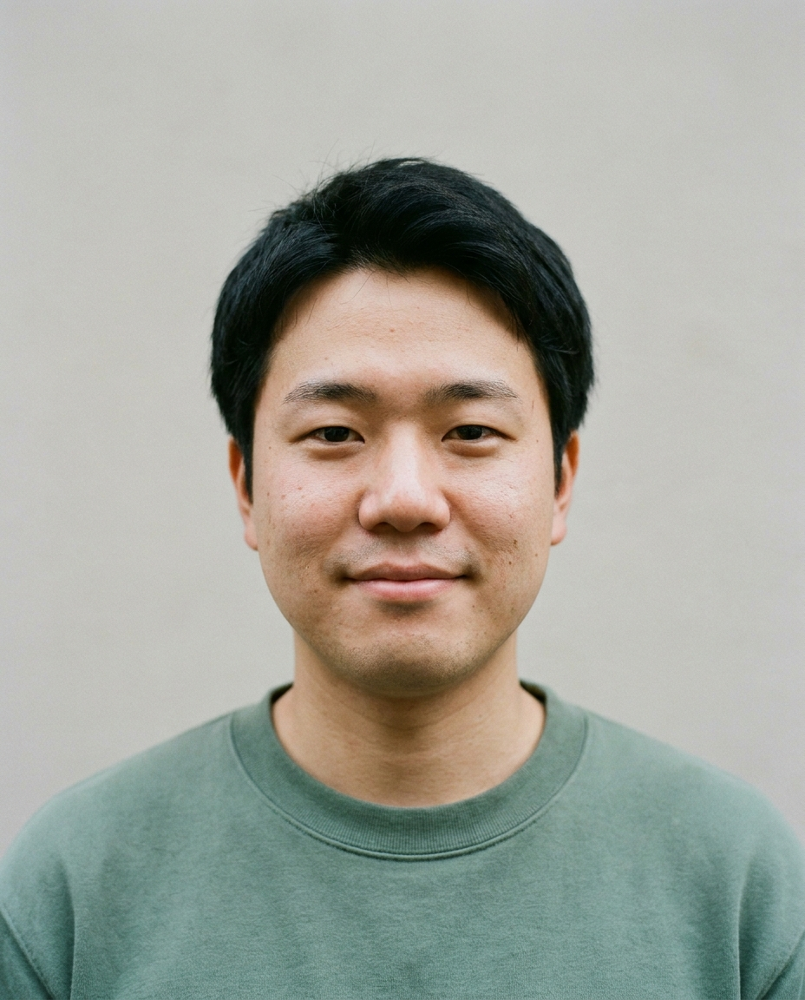
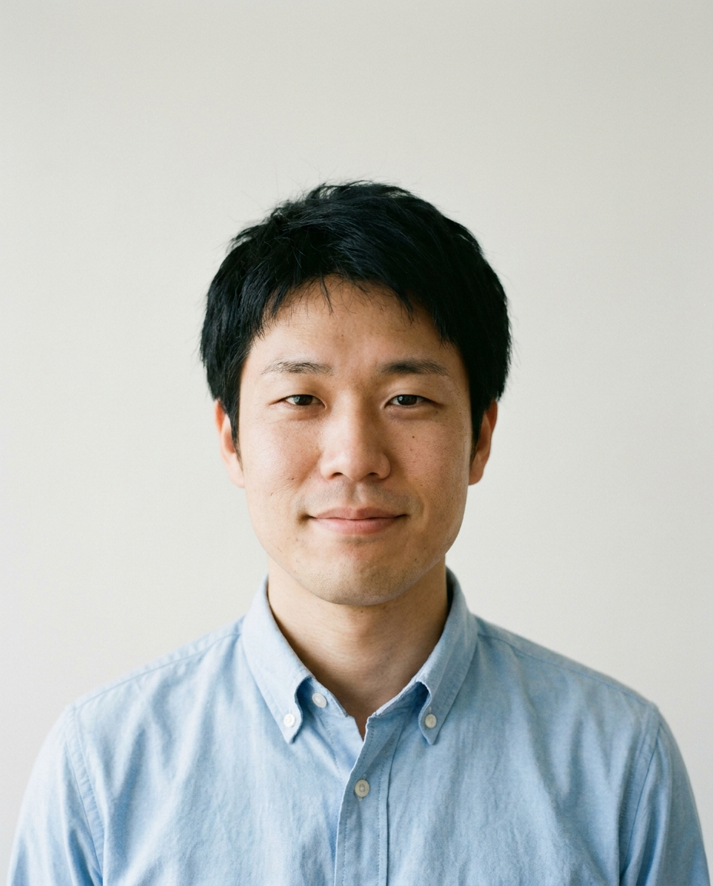
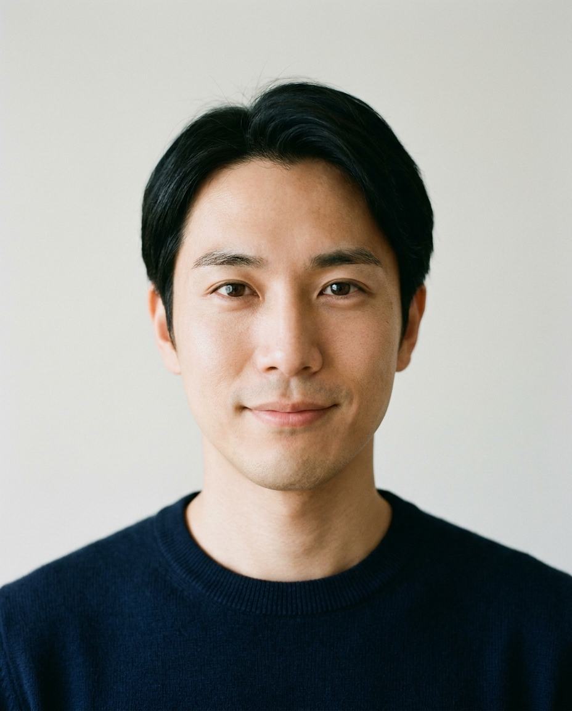
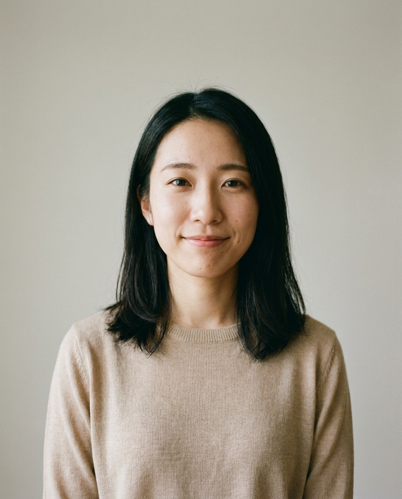
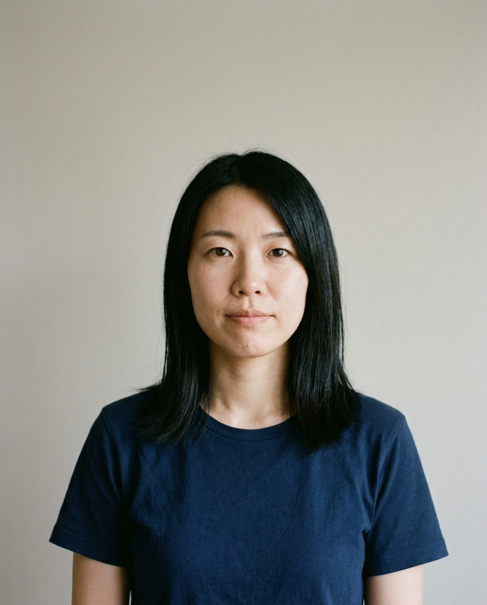
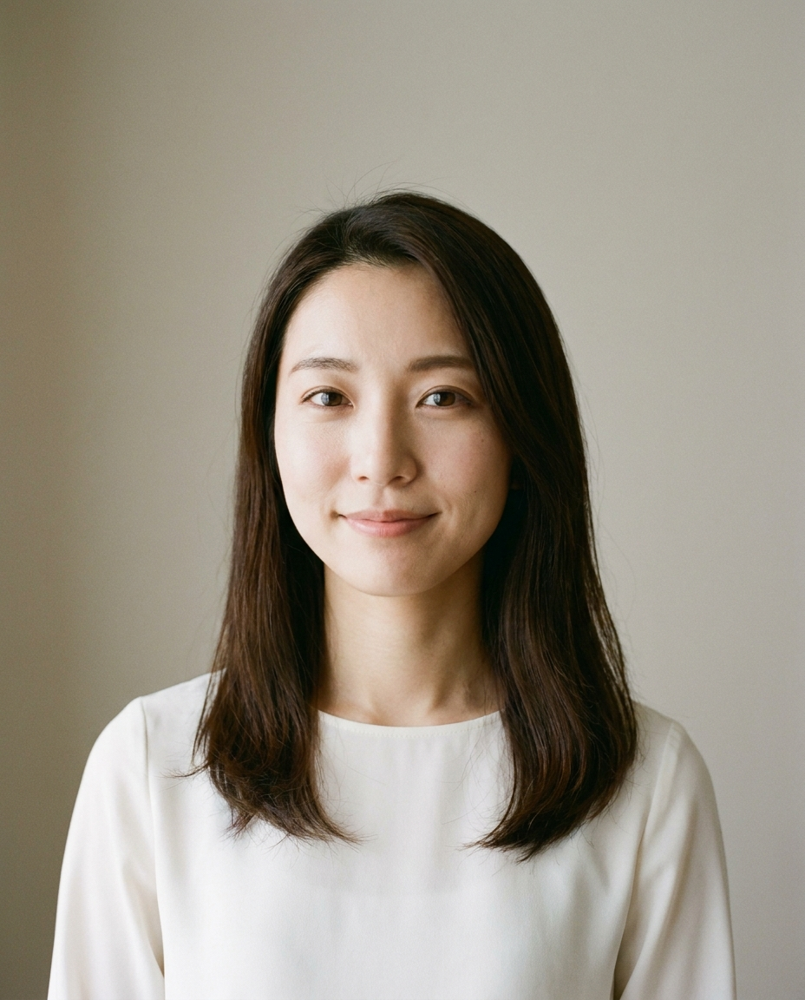

ポートレート確認シート（初回6枚）
レビュー：gemini-3.8-flash（2026-10-18T09:31:40.764Z）。容姿の5段階には主観があり、AIの比較は補助です。盲検比較ではレベル・職業・収入・ファイル名を伏せ、順序を入れ替えた画像だけを送っています。
男性（設定の容姿 低→高）

M07 大輔・27歳 設定：容姿1
- 盲検比較（ラベルA）
- 印象 3/5・順位 3 表情：口を閉じてわずかに微笑む、穏やかで落ち着いた表情
- 観察された特徴
- 丸みのある輪郭、すっきりとした奥二重の目元、丸みのある鼻先、短めの黒髪。緑色のクルーネックスウェットを着用。
- 個別レビュー
- 人数 1／見た目年齢 25〜30歳／美化：none（肌の質感や非対称性が保持されており、広告風の過度な平滑化や拡大加工は見られません。）
- 制作側の所見
- 撮影条件は揃っているが、全体として感じのよい平均的な人物に寄っている（盲検で3/5）。頬の量感・丸い鼻は出ているが、顔の各部の比率のばらつきと輪郭のまとまりのなさが弱い。表情がやや笑顔寄り。

M05 悠斗・31歳 設定：容姿3
- 盲検比較（ラベルB）
- 印象 4/5・順位 2 表情：口角を自然に上げた、親しみやすく優しげな微笑み
- 観察された特徴
- やや面長な輪郭、すっきりとした切れ長の目元、ナチュラルな黒髪ショートヘア。淡いブルーのボタンダウンシャツを着用。
- 個別レビュー
- 人数 1／見た目年齢 28〜34歳／美化：none（肌の質感や凹凸、左右差が保たれており、モデル風の過度な平滑化や補正は見られません。）
- 制作側の所見
- 平均的な人物として妥当（盲検で4/5とやや高め）。シャツと明るい背景で印象が底上げされている可能性がある。

M01 蒼・32歳 設定：容姿5
- 盲検比較（ラベルC）
- 印象 5/5・順位 1 表情：穏やかで堂々とした、清潔感と安心感を与える微笑み
- 観察された特徴
- 整った卵型の輪郭、くっきりとした二重の目元、通った鼻筋、すっきりとセットされた黒髪。ダークネイビーのクルーネックニットを着用。
- 個別レビュー
- 人数 1／見た目年齢 29〜35歳／美化：none（肌の質感や髭の剃り跡が適度に残っており、過度な加工感はありません。）
- 指摘
- design_match：【表れている点】卵型の輪郭、通った鼻筋、整った眉と口元、センターパートの短髪、ネイビーのクルーネックニット。【表れていない点】目元は指定ほど切れ長の二重が強調されておらず、やや丸みがあります。（修正案：目元をやや切れ長の二重に微調整する。）
- 制作側の所見
- 際立って整った人物として描けている（盲検で5/5）。M05・M07と同じ撮影条件のまま差が出ている。
盲検比較で挙がった交絡要因：服装の清潔感・フォーマル度（Aのスウェットに比べ、BのシャツやCのきれいめニットのほうがマッチングアプリで好印象を与えやすい影響）／ライティングの明るさ（Aのやや暗め・グレー背景に比べ、BとCの背景や照明が明るく爽やかな印象を底上げしている点）／ヘアスタイルのセット感（Cの整えられたスタイリングがより洗練された印象を与えている点）
比較が難しい点：顔立ちの造形（すっきりした一重・奥二重系の親しみやすさ vs ぱっちりとした二重の端正さ）は閲覧者の好みによって評価が分かれやすい点
ほぼ同じと判断された組：なし（不確かさ：low）
比較が難しい点：顔立ちの造形（すっきりした一重・奥二重系の親しみやすさ vs ぱっちりとした二重の端正さ）は閲覧者の好みによって評価が分かれやすい点
ほぼ同じと判断された組：なし（不確かさ：low）
女性（設定の容姿 低→高）

F06 葵・24歳 設定：容姿1
- 盲検比較（ラベルA）
- 印象 3/5・順位 2 表情：口角をわずかに上げた穏やかで自然体な微笑み
- 観察された特徴
- 黒髪のセミロングヘアを自然に下ろし、額を出したスタイル。切れ長で自然な二重まぶた、すっきりとした鼻筋、薄めの唇。肌質は自然で、ベージュのクルーネックニットを着用。
- 個別レビュー
- 人数 1／見た目年齢 22〜26歳／美化：none（過剰な美肌加工や目の拡大、細すぎる輪郭加工はなく自然です。）
- 制作側の所見
- 感じのよい普通の女性に寄っており、容姿1の狙いから美化されている（盲検で3/5、F03より上）。目元は小さめだが、鼻と口元の存在感・口元から顎の不均衡がほとんど表れていない。微笑みも印象を上げている。

F03 美咲・30歳 設定：容姿3
- 盲検比較（ラベルC）
- 印象 2/5・順位 3 表情：口元を結んだほぼ無表情、やや緊張感や硬さがある
- 観察された特徴
- 黒髪のストレートミディアム、センター分け。涼しげな一重寄りの目元、落ち着いた輪郭。カジュアルな濃紺のTシャツを着用。
- 個別レビュー
- 人数 1／見た目年齢 28〜34歳／美化：none（肌の質感や左右差が保持され、過度な加工やモデル風の美化はありません。）
- 指摘
- design_match：【表れている特徴】奥二重、標準的な鼻と口、自然な左右差、ナチュラルメイク、肩丈の黒髪、ネイビーのカットソー。【表れていない特徴】輪郭は丸顔というよりやや面長寄り。（修正案：必要に応じて輪郭をわずかに丸みのある形状に調整。）
- 制作側の所見
- 無表情で証明写真のような硬さがあり、濃紺Tシャツと合わせて実際の狙い（容姿3）より低く見える（盲検で2/5）。顔立ちではなく表情・服装の差で順位が逆転している。

F01 彩・27歳 設定：容姿5
- 盲検比較（ラベルB）
- 印象 4/5・順位 1 表情：優しさと親しみやすさを感じさせる穏やかな微笑み
- 観察された特徴
- 落ち着いたダークブラウンのツヤのあるロングヘア。均整の取れた二重まぶた、目元がぱっちりとしており、通った鼻筋と滑らかなフェイスライン。清潔感のある白のブラウスを着用。
- 個別レビュー
- 人数 1／見た目年齢 25〜29歳／美化：none（過剰な肌の平滑化や極端な目・輪郭の変形はなく、自然な風合いです。）
- 制作側の所見
- 整った魅力的な人物として描けている（盲検で4/5、女性内1位）。
盲検比較で挙がった交絡要因：表情の差（A・Bは笑みがあるのに対し、Cは無表情で証明写真のような硬さがある）／服装のトーン（Bの白色は顔まわりを明るく見せる一方、Cの濃紺はカジュアルかつ暗めに見えやすい）／ヘアスタイリングのまとまり具合と髪色の明るさ
比較が難しい点：ライティングや背景は揃っているものの、着用している服装の色・素材（ブラウス／ニット／Tシャツ）のフォーマル度が異なり、顔立ちそのもの以外の要素が印象形成に大きく介入している点
ほぼ同じと判断された組：なし（不確かさ：low）
比較が難しい点：ライティングや背景は揃っているものの、着用している服装の色・素材（ブラウス／ニット／Tシャツ）のフォーマル度が異なり、顔立ちそのもの以外の要素が印象形成に大きく介入している点
ほぼ同じと判断された組：なし（不確かさ：low）